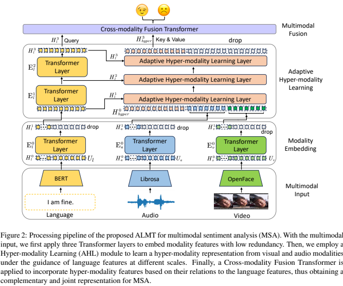
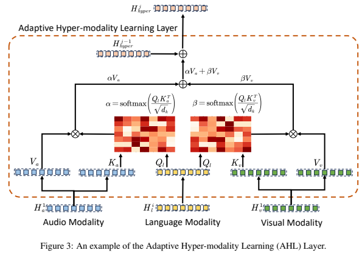
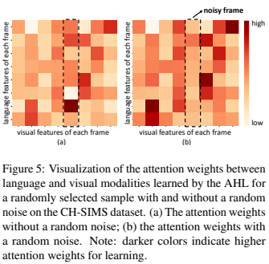

ALMT：语言怎样引导音视频，形成可用于情感判断的超模态表示？
从一条 CH-SIMS 样本出发，读懂压缩 token、三层 AHL、交叉融合与实验边界，再回到你已经跑过的代码。
一句话总结
ALMT 用不同深度的语言表示查询音频与视觉，逐层累积超模态表示，再由语言查询该表示完成情感回归；核心是学会选择辅助信息，而非直接检测并删除所有模态冲突。
01 · 先确定 ALMT 到底在预测什么
多模态情感分析（Multimodal Sentiment Analysis，MSA）通常输入一段视频的文字、声音与视觉信息，输出从负面到正面的情感倾向或强度。以本文的 CH-SIMS 实验为例，监督标签位于 −1 到 1；输出是一个连续数。它不是在六个基本情绪之间选择，也不自动生成“为什么难过”的解释。把任务定义弄错，后面的网络图即使看懂，也会改错损失和评价。
为什么不只看文字？自拟例子中，一个人说“我没事”，语调、表情可能补充文字没说出的信息。但辅助模态也携带照明、头部姿态、背景声等与情感无关的变化。拼接三路向量意味着把有用和无用信息一起交给预测器；模型仍需从有限标签里学会区分，更多输入不保证更多有效证据。
原文 Introduction 将相关方法分成两类：一类先学习更好的模态表示，例如模态共享／私有空间与互信息约束；另一类设计融合机制，例如张量交互和跨模态 Transformer。这是作者用于组织问题的方法分类，不是说这些方法完全互斥。ALMT 的切入点是在最终融合前，先得到受语言引导的辅助表示。
其动机依赖一个有条件的假设：在所研究的 MSA 数据上，语言经常是较强、相对干净的模态。这里的“主导”不是“永远正确”。ASR 错误、隐喻、反讽和非语言表达都可能让语言不足以指导其他信息；将这个假设推广到无文本表情识别或开放场景，需要重新检验。原文 Figure 1 是动机展示，不能单独证明所有场景中的语言优势。
理解贡献时可以保留三条：先用学习 token 将各模态整理成统一大小；用多层语言查询构建超模态；再用语言与超模态进行交叉融合。三条合起来是一套表示与融合设计。作者关于抑制无关／冲突信息的解释，需要通过后面的消融和扰动观察来评估，不能仅凭模块名称就视为已验证机制。
02 · 读公式之前，先把四个概念分开
第一，token 是一个计算位置，不一定是一个词或一帧。BERT 的文本 token 常对应子词，音频位置对应特征时间步，而 ALMT 后续保留的 8 个学习 token 是从整段序列聚合得到的表示。它们没有被约束为八个等长时间段。于是，8×8 的注意力图不能未经核实就映射回八个真实视频帧。
第二，特征维度是每个位置保存多少个数。将某一模态写为 $U_m\in\mathbb{R}^{T_m\times d_m}$，$m$ 表示语言 l、音频 a 或视觉 v；$T_m$ 是位置数，$d_m$ 是每个位置的宽度。批次维 B 在论文公式里通常省略。形状相同只代表矩阵可计算，不代表三路位置已经建立真实时间对齐。
第三，Query、Key、Value 分工不同。Query 表示当前想找的信息，Key 用于计算匹配，Value 提供被取回的内容。权重矩阵由 Q 和 K 决定，最终读出的向量由权重与 V 决定。因此两个分支即使权重分布相似，也可能因为 V 的幅度与方向不同，对输出产生不同影响。
第四，多尺度在这篇论文中主要指语言表示经过不同深度的 Transformer，而非不同图像分辨率。$H_l^1,H_l^2,H_l^3$ 的长度与宽度都可以是 8×128。把“层更深”理解为表示经过更多上下文变换，比直接把三层命名为词法、句法、情绪层更稳妥；论文没有提供这种逐层语义标签的监督。
| 变量／操作 | 形状 | 应该如何理解 |
|---|---|---|
| text_bert 输入 | B×3×39 | token ID、attention mask 等编码输入，不是 BERT 隐藏向量 |
| BERT 输出 | B×39×768 | 上下文文本特征 |
| 音频缓存 | B×400×33 | 音频特征序列 |
| 视觉缓存 | B×55×709 | 视觉特征序列 |
| 三路压缩结果 | 各 B×8×128 | 学习 token；并非保留原始前八帧 |
| 单个 AHL 头的 Q/K/V | B×8×16 | 8 个位置，每头 16 维；共有 8 个头 |
| 单个 AHL 头的 α 或 β | B×8×8 | 每行按键位置归一化 |
| 最终汇总与回归 | B×128 → B×1 | 一个情感回归值 |
03 · 模态嵌入：为什么只保留八个 token？

先沿 Figure 2 自下向上读。三路输入分别进入模态嵌入模块，再由语言分支生成不同深度的表示。中部三个 AHL 层并非三个独立分类器，它们连续更新同一个超模态状态；顶部才做最终融合与预测。先画清这条线，再去看每个 Transformer 内部，会比一开始陷入所有注意力参数容易。
这里 $H_m^0$ 是可学习的初始 token，$E_m^0$ 是模态 Transformer，$\theta$ 表示其参数。人话解释：在原序列前放几个可学习的汇总位置，让它们读取整段内容，再保留这些位置。公式把投影和保留操作合并记述；代码会把这些步骤拆开。
代码先用线性层把每个模态的宽度变为 128，再拼接额外 token。对 CH-SIMS 来说，文本长度暂时变为 39+8，音频为 400+8，视觉为 55+8。经过一层自注意力及前馈网络后，主模型切出前 8 个位置。这些位置在拼接前是额外 token，经过注意力后已读取整段原特征，因此不是粗暴丢掉第九帧以后的原始信息。
237: def forward(self, x):
238: b, n, _ = x.shape
239:
240: if self.token_len is not None:
241: extra_token = repeat(self.extra_token, '1 n d -> b n d', b = b)
242: x = torch.cat((extra_token, x), dim=1)
243: x = x + self.pos_embedding[:, :n+self.token_len]
244: else:
245: x = x + self.pos_embedding[:, :n]
246:
247: x = self.dropout(x)
248: x = self.encoder(x, self.save_hidden)
249:
250: return x上段的 extra_token 在类初始化的第 224 行创建；这里的 torch.cat 把它放在前面，pos_embedding 为位置提供可学习信息。注意函数返回完整序列；真正只取前 8 个位置的操作位于 models/almt.py:46–48。只阅读其中一个文件，容易误认为没有发生压缩。
这种设计减少的是后续 AHL 与融合器处理的序列长度；最前面的模态 Transformer 仍然处理“原长度＋8”的序列。因此不能说全模型注意力复杂度从一开始就固定为 8²，也不能用后续 token 数直接推导完整显存。特征缓存的长音频仍然可能影响第一层计算。
参数初始化也需要分清原文概括与当前源码：§3.3 用随机初始化描述 token；当前代码的 extra_token 使用零初始化，而位置嵌入使用随机值，初始 hyper token 使用全一。它们均是可训练参数。本文记录这些差异，不将 2025 年整理后的代码细节倒推为 2023 年实验必然完全相同。
04 · AHL：把“语言引导”拆成可以手算的操作
原文短引 1：different scales of language features（§3.4）。此处的 scales 对应不同深度的语言表示，不能直接翻译为不同时间分辨率。
AHL 的第一个子问题是：不能让同一份浅层语言表示负责所有选择。原文保留初始语言表示，并继续经过两层 Transformer 产生另外两份，分别驱动三个 AHL 层。不同层的表示可能提供不同上下文，但这些层是否形成特定语言学分工，需要额外探测实验。
每层接收上一层表示，长度和维度保持不变。人话解释：不是把句子截成三种长度，而是让同一组位置经过更深的语义变换。源码 TransformerEncoder.forward 在 save_hidden=True 时把输入以及各层输出都放入列表，所以两层编码器能返回三份表示。

AHL 的第二个子问题是：语言具体怎样决定辅助信息的读取量？Figure 3 中，语言同时产生两条路径共用的 Query，而音频、视觉各自产生自己的 Key 和 Value。单个头中，每个语言 token 与全部八个辅助 token 进行点积。计算的是潜在空间的匹配，不是按帧时间戳查找同一瞬间。
$W_{Q_l}$ 与 $W_{K_a}$ 是可学习投影，$d_k=16$ 是 AHL 每头宽度。softmax 沿音频键的位置归一化，因此一行表示“某个语言查询怎样分配对八个音频位置的读取权重”。缩放项 $\sqrt{d_k}$ 控制点积分数的尺度，避免维度增长时过快饱和。
$\beta$ 与 $\alpha$ 结构相同，但读取的是视觉。两者分别归一化，每个矩阵的每行都和为 1；不存在“音频权重＋视觉权重＝1”的二选一门控。模型如何平衡两模态，还取决于 Value、投影与后续处理。
先做一个自拟的两位置手算。假设缩放后的相似度为 [0, ln(3)]，softmax 就是 [0.25, 0.75]。若两个 Value 为 [2,0]、[0,4]，读出的向量为 0.25×[2,0]+0.75×[0,4]=[0.5,3]。第一步回答“更匹配谁”，第二步才回答“读到了什么”。这个教学例子不使用真实模型数据。
自己改变一次读取权重
固定 V₁=[2,0]、V₂=[0,4]，分数为 [0,s]。拖动 s，观察 softmax 和输出；数值均为教学构造。
三个 AHL 层把读取到的辅助信息逐步累加进超模态。$V_a=H_a^1W_{V_a}$，$V_v=H_v^1W_{V_v}$。人话解释：每次根据一层语言表示更新“辅助信息汇总”，下一层继续修正。原文省略了多头合并细节；不能把单头 16 维结果直接与 128 维状态相加。
129: def forward(self, h_t, h_a, h_v, h_hyper):
130: b, n, _, h = *h_t.shape, self.heads
131:
132: q = self.to_q(h_t)
133: k_ta = self.to_k_ta(h_a)
134: k_tv = self.to_k_tv(h_v)
135: v_ta = self.to_v_ta(h_a)
136: v_tv = self.to_v_tv(h_v)
137:
138: q, k_ta, k_tv, v_ta, v_tv = map(lambda t: rearrange(t, 'b n (h d) -> b h n d', h=h), (q, k_ta, k_tv, v_ta, v_tv))
139:
140: dots_ta = einsum('b h i d, b h j d -> b h i j', q, k_ta) * self.scale
141: attn_ta = self.attend(dots_ta)
142: out_ta = einsum('b h i j, b h j d -> b h i d', attn_ta, v_ta)
143: out_ta = rearrange(out_ta, 'b h n d -> b n (h d)')
144:
145: dots_tv = einsum('b h i d, b h j d -> b h i j', q, k_tv) * self.scale
146: attn_tv = self.attend(dots_tv)
147: out_tv = einsum('b h i j, b h j d -> b h i d', attn_tv, v_tv)
148: out_tv = rearrange(out_tv, 'b h n d -> b n (h d)')
149:
150: h_hyper_shift = self.to_out(out_ta + out_tv)
151: h_hyper += h_hyper_shift
152:
153: return h_hyper源码明确补出了形状处理：先把投影结果拆成 B×heads×tokens×dim_head；einsum 中 i 表示查询位置，j 表示键位置。读取后把各头重新拼接，两路相加，再由 to_out 映射回 128 维，与 hyper 状态相加。§3.4.2 的公式与这段代码因此描述同一核心操作，但代码包含论文简写中未展开的输出投影。
还要检查调用者：PreNormAHL.forward（第 49–55 行）先对语言、音频、视觉和 hyper 分别做 LayerNorm。因此更贴近当前实现的描述是“归一化旧 hyper，再加入投影后的两路读取结果”。这与把裸的旧 hyper 无限累加并不完全相同。理解论文公式时保持抽象，复现代码时则要包含归一化位置。
为什么可能有用？Query 的变化使模型可以在不同文字语境下从同一组辅助特征取出不同组合。预测误差沿着回归头、融合器、AHL 反向传播，逐渐调整这些选择。它没有直接接收“这一位置是噪声／这一对模态冲突”的人工监督，所以“抑制冲突”应视为作者对学习行为的解释，而非一个可直接返回冲突标签的独立功能。
原文 Figure 4 展示注意力分布，Figure 5 展示加入扰动后的变化；二者可以支持“模型选择发生变化”的观察，但注意力并不直接等于因果贡献。尤其音频与视觉各自 softmax 归一化，其权重总量并不自然提供跨模态重要性排序。要判断移除某一路对最终任务的影响，还需要同条件消融或受控干预。
05 · 最终融合：谁是 Query，要看函数内部
原文短引 2：only involves one learning objective（§3.6）。作者只引入一个显式任务学习目标，不是另设冲突检测监督。
$H^0\in\mathbb{R}^{1\times d}$ 是额外汇总 token；加上它后，每路有 9 个位置。人话解释：最终融合再提供一个专门汇集整段信息的位置，而不是直接平均八个 token。代码为 source 与 target 使用各自的位置嵌入，但共享这一额外 token 参数。
原文中语言作为 Query，hyper 作为 Key/Value，最后取汇总位置。右侧线性回归是对源码的展开，不是论文独立编号公式。输出一个数后，评价脚本可按任务边界转成二类、三类或五类，但这些分类指标不意味着训练了对应数量的分类头。
44: x_text = self.bertmodel(x_text)
45:
46: h_v = self.proj_v(x_visual)[:, :self.h_hyper.shape[1]]
47: h_a = self.proj_a(x_audio)[:, :self.h_hyper.shape[1]]
48: h_l = self.proj_l(x_text)[:, :self.h_hyper.shape[1]]
49:
50: h_t_list = self.l_encoder(h_l)
51: h_hyper = self.h_hyper_layer(h_t_list, h_a, h_v, h_hyper)
52: feat = self.fusion_layer(h_hyper, h_t_list[-1])[:, 0]
53:
54: output = self.regression_layer(feat)
55:
56: return output207: def forward(self, source_x, target_x):
208: for attn, ff in self.layers:
209: target_x_tmp = attn(target_x, source_x, source_x)
210: target_x = target_x_tmp + target_x
211: target_x = ff(target_x) + target_x
212: return target_x第一段先传 hyper，容易误读为 hyper 是 Query。第二段说明 source_x 被用于 K/V，target_x 才是 Q；所以 fusion_layer(h_hyper,h_t_list[-1]) 的实际方向与论文一致。[:,0] 选取额外汇总 token，再送入线性回归。读框架时，参数排列不是 Q/K/V 语义的可靠依据。
另一个容易误写的细节是每头宽度。AHL 从配置显式传入 ahl_dim_head=16；普通 Transformer 与 CrossTransformer 在这份源码中默认 dim_head=64，调用处未覆盖。因此它们 8 个头的内部总宽度是 512，再投影到 128。不能仅用“模型宽度128÷头数8”推断所有模块每头都是16，这属于实现自由度。
唯一显式任务目标是均方误差 MSE。$y_n$ 是真值，$\widehat y_n$ 是预测。人话解释：离真值越远，平方惩罚越大；音视频选择是否有用，由它能否降低最终情感预测误差间接决定。原文求和下界记为 0，此处只规范索引，不改变均方误差含义。
例如真实值 0.6、预测 0.2，MSE 为 0.16，预测处梯度为 2×(0.2−0.6)=−0.8，梯度下降倾向增大预测。评价 MAE 则为 0.4，二者不是同一个数。当前官方训练脚本使用 MSELoss，却将部分 TensorBoard loss 标签命名为 MAE；读曲线时应检查实际损失函数，而不是只看曲线名称。
flowchart TB T[Text IDs and mask] --> B[BERT] B --> TL[Linear and token embedding] A[Audio features] --> TA[Linear and token embedding] V[Visual features] --> TV[Linear and token embedding] TL --> L1[Language scale 1] L1 --> L2[Language scale 2] L2 --> L3[Language scale 3] L1 --> H1[AHL 1] L2 --> H2[AHL 2] L3 --> H3[AHL 3] TA --> H1 TA --> H2 TA --> H3 TV --> H1 TV --> H2 TV --> H3 H0[Learned hyper state] --> H1 H1 --> H2 H2 --> H3 L3 -->|Query| F[Cross-modal fusion] H3 -->|Key and Value| F F --> R[Summary token and regression] R --> Y[One sentiment score]
教学重绘流程图；是对原文 Figure 2 和当前源码的整理，不是新增实验。
06 · 实验要分两层读：成绩与机制证据
原文 §4.1 在 MOSI、MOSEI 与 CH-SIMS 上分别训练／评价。其训练、验证、测试规模分别为 1284/229/686、16326/1871/4659、1368/456/457。英文数据标签范围为 −3 到 3，CH-SIMS 为 −1 到 1。三个数据集分别取得成绩，支持方法在多种数据上的适用性，但不等同于“只在 A 训练便能直接泛化到 B”的跨域协议，更不等同于场景增量学习。
原文附录 Table 9 给出共同的 token 长度 8、特征维度 128、模态嵌入深度 1、AHL 深度 3、batch 64、初始学习率 1e−4、AdamW 与 200 epochs，并采用 warm-up 和余弦退火。融合深度在 MOSI 为2，在 MOSEI 和 CH-SIMS 为4。这是论文配置；当前 README 后续整理过的软件／硬件环境与原 PDF 附录记载不同，复现实验应保留自己的完整环境，不把当前 README 当历史快照。
| 方法 | Acc-5 % | Acc-2 % | F1 % | MAE | Corr |
|---|---|---|---|---|---|
| TFN | 39.3 | 78.38 | 78.62 | 0.432 | 0.591 |
| MulT | 37.94 | 78.56 | 79.66 | 0.453 | 0.564 |
| Self-MM | 41.53 | 80.04 | 80.44 | 0.425 | 0.595 |
| ALMT | 45.73 | 81.19 | 81.57 | 0.404 | 0.619 |
ALMT 相比 Self-MM 的 Acc-5 提高 4.20 个百分点，Acc-2 提高 1.15 个百分点；MAE 降低 0.021，约为相对降低 4.94%。这说明在该表的报告设置下，细分情感区间的改善比二分类更加明显。百分点与相对百分比不能混用，例如 80.04% 到81.19% 不是提升1.15%的相对幅度。也不能忽略表注：多项对照来自既有论文或公开结果，而非作者对所有方法统一重跑。
主结果也不是每个数据集每项指标都领先。Table 1 中 MOSEI 的 ALMT Acc-7 为54.28，而 CHFN 为54.3；MAE 为0.526，CHFN 为0.525。MOSI 上 ALMT Corr 为0.805，CHFN 为0.809。正确读法是“整体有竞争力且多项指标改善”，不是把摘要中的优势概括为所有指标全面最好。
| 变体 | MOSI Acc-7 % | MOSI MAE | CH-SIMS Acc-5 % | CH-SIMS MAE |
|---|---|---|---|---|
| 完整 ALMT | 49.42 | 0.683 | 45.73 | 0.404 |
| 去音频（Table 3） | 48.69 | 0.705 | 45.08 | 0.416 |
| 去视频（Table 3） | 47.96 | 0.704 | 44.64 | 0.403 |
| 仅语言（Table 3） | 46.79 | 0.752 | 40.26 | 0.405 |
| 去 AHL（Table 4） | 34.4 | 0.952 | 38.29 | 0.444 |
| 去融合 Transformer（Table 4） | 48.69 | 0.703 | 43.76 | 0.41 |
| 去模态嵌入（Table 4） | 47.96 | 0.701 | 43.11 | 0.429 |
最强的组件证据来自去 AHL：MOSI Acc-7 从49.42降到34.40，CH-SIMS 从45.73降到38.29。原文用拼接替代 AHL，说明这套构造比该替代方案有效。不过删模块也改变表示路径、参数与优化难度，消融支持模块贡献，并不单独证明贡献全部来自“消除了冲突”，更不证明已经识别出冲突所在。
模态消融揭示更细的结论：CH-SIMS 仅语言的 MAE=0.405，与完整0.404非常接近，但 Acc-5 差5.47个百分点；去视频的 MAE=0.403反而略好于完整。这并不矛盾：连续误差与分箱准确率关注不同性质，某些预测跨过分箱边界就会改变准确率。0.001 的 MAE 差距还需要波动信息才能判断稳定性。原表不足以支撑“每一路辅助模态在每个指标上都必需”。
Table 5 对比最终融合方向：语言作 Query 时，CH-SIMS Acc-5 为45.73，反向为44.64；对应 MAE 为0.404与0.410。它支持该设置在报告实验中的选择。Table 6 比较语言层组合，三层全用在列出的指标上较好；但这不等于层数越多越好。附录专门研究深度，增加计算并非总能改善。

Figure 5 中，作者对视觉表示 $H_v^1$ 的一个位置加入随机噪声，观察语言—视觉注意力变化。图里被标记列的权重下降，是局部敏感性证据；它不是完整的自然冲突测试集，也没有直接测量原始视频世界里“何种噪声导致了什么”。尤其它作用于压缩后的表示，不应写成已验证任意原始视频帧扰动。若要拓展，应补固定扰动强度、多个样本、多种子与最终任务退化曲线。
Figure 6 的 t-SNE 提供表示分布的可视线索，但降维结果受超参数影响，图中接近不等于原空间分布严格相同。Figure 7 的训练／验证曲线展示该次比较的收敛行为，也不能替代多次运行的均值和方差。附录 Figure 10 的文字描述与图中标注的最优深度位置存在不一致；因此本文只采用 Table 9 的明确配置，不把图中文字的不一致转成确定的调参结论。
07 · 与你本地实验对照：复现不是复制表格
下面只汇总已经存在的本地结果，没有为本篇解读重跑训练。读取文件为 almt_local/ablation_multiseed_summary.json 与 multiseed_summary.json，种子8、21、42。每个种子按验证 MAE 选择一个 checkpoint，再报告该权重的测试指标。它是本地兼容环境基线，与论文报告设置、当前作者训练脚本的记录方式需要分别说明。
| 模型 | Acc-2 % | Acc-5 % | MAE |
|---|---|---|---|
| 完整 ALMT | 78.48 ± 0.77 | 40.77 ± 1.54 | 0.4221 ± 0.0087 |
| 仅文本 | 78.26 ± 1.46 | 40.99 ± 0.70 | 0.4186 ± 0.0119 |
| 文本＋视觉 | 77.97 ± 0.46 | 40.26 ± 1.65 | 0.4310 ± 0.0180 |
| 文本＋音频 | 78.41 ± 1.01 | 40.55 ± 1.03 | 0.4307 ± 0.0105 |
完整 ALMT 本地 MAE 约0.4221，高于论文0.404；Acc-5约40.77%，低于论文45.73%。这能说明当前流程尚未达到原论文报告数值，但仅凭差距无法定位原因。可能因素包括环境、特征版本、选模口径、实现版本和训练细节，需要逐项审计，而不是用“GPU不同”一项概括。
当前作者 README 明确指出分类和回归指标可能来自不同 epoch；训练入口还逐轮计算测试成绩并输出跨 epoch 最优测试结果。你本地使用单个验证最优权重，口径更容易审计，但与这种记录方式不同。静态检查只证明当前代码存在这些行为，不能据此断言历史论文每个数字如何选出。分析报告必须写清已知事实和不能确定的部分。
从本地表看，完整模型相对仅文本的 MAE 高约0.0035；Acc-2差约0.22个百分点，Acc-5略低。差异与种子波动处在相近或更小量级，但这并非正式显著性检验，不能因此宣布两者等效。它更适合引出下一步问题：辅助模态在哪些样本上帮助，哪些样本上伤害，而不是反复改模型直到得到更好单次分数。
已存在的预测分析对齐了12份预测与457个测试样本，并把三个种子中方向一致、平均绝对误差变化至少0.1的样本定义为稳定变化：完整模型稳定改善39条、稳定退化35条；文本与完整模型在三个种子下都二分类错误的共同难点有58条。这说明收益与损失并存，单一平均数会掩盖差异。分析没有观看原视频，不能把这些样本直接归因于噪声、反讽或人脸检测失败。
| 人工单模态标签关系 | 唯一样本数 | 文本 MAE | 完整 MAE |
|---|---|---|---|
| 三模态三分类一致 | 247 | 0.3812 | 0.3776 |
| 混有中性，但无明确正负相反 | 124 | 0.3955 | 0.4149 |
| 存在明确正负相反 | 86 | 0.5596 | 0.5605 |
这张表提示，中性混合组的完整模型相对退化更明显，而正负相反组两模型都难、差距却很小。因此“模态不一致必然导致融合退化”并不符合全部观察。分组使用人工标签，是一个不一致代理，不等于模型内部冲突测量；三个种子重复使用同一批样本，也不是1371个独立样本。由于这些观察来自测试集，它们适合报告局限与提出假设；后续修改若据此设计，需要新的独立评价或清楚披露探索性使用，不能继续把该测试集当完全未见证据。
08 · 哪些结论成立，哪些仍然需要证据？
原文短引 3：the size of the training datasets（Limitations）。作者把训练数据规模列为模型性能的制约条件。
作者自述的局限：原文 Limitations（第10页）指出，Transformer 模型参数较多、需要充分训练，而当前情感数据规模较小，可能限制表现；回归指标 MAE/Corr 的提升相对有限，可能需要更多数据。这里不是泛泛说“数据不够”，而是提出具体依赖：更细的连续情感拟合可能比粗分类更需要样本覆盖。
独立判断一：语言主导是适用条件。ALMT 用语言同时影响辅助信息选择和最终融合，文本一旦系统性失真，可能把真实辅助证据误判为不相关。它没有独立的语言可靠性估计目标。可以设计控制文字缺失、ASR 错误或文本误导的实验，但应区分自然数据与人工扰动，不能预设结果。
独立判断二：机制解释强于现有直接证据。消融、可视化和局部噪声实验使“选择辅助信息”有经验支持，但并未建立自然情绪冲突的完整检测与因果验证。对反讽等语义不一致任务，冲突本身可能有用；下一步可以比较“压低冲突”与“显式保留冲突证据”，而不是继续把所有不一致都视为需要删除的噪声。
独立判断三：参数量口径需要核对。Table 8 报告 ALMT 2.50M；本地记录的完整可训练模型含 BERT 约1.055亿参数。两者明显不是可以不加说明直接对比的数字。应分别统计文本编码器、融合模块、总参数和可训练参数，并记录是否包含预训练主干；未经核实，不能把2.50M宣传为你当前整套模型的总规模。
对细粒度方向，ALMT 能作为表示学习起点，但新增六维多标签预测还需要新的标签、BCE目标与逐类评价；生成解释则进一步需要可观察证据和语言监督。对跨场景方向，ALMT 本身没有持续学习机制，不能只换一个场景顺序就认为解决遗忘。先以它或合适视频模型作为基线，再加入知识保持方案，两条研究问题各自建立清晰协议。
09 · 初学者读完以后，具体做什么？
- 20分钟：复述任务。写出一条样本的输入字段、标签范围和输出形状；明确这是情感回归，不是开放词汇情绪。
- 40分钟：对照形状。沿 almt.py 的 forward 在现有模型上只跑一个 batch，记录 BERT、三路投影、三份语言表示、hyper、融合与输出的 shape。不要启动200轮训练。
- 30分钟：验证 AHL。手算本页两位置例子，再检查 attention 每行和为1、8头合并后的128维。额外记录普通 Transformer 的内部每头维度，避免混用。
- 30分钟：读两张原表。计算 Self-MM 到 ALMT 的百分点差与 MAE 差；指出去视频后 MAE 略好这个反例。
- 40分钟：整理本地偏差。写清代码提交、验证选模、测试访问、环境与参数统计口径。不重复已完成的三种子实验。
自测 1：为什么保留前8个 token 不等于只看前8帧？
前8个位置是额外学习 token，它们在 Transformer 中已经从完整序列聚合信息。原输入位置随后才被丢弃。
自测 2：α 和 β 的平均大小能直接说明视觉更重要吗？
不能。两者独立逐行归一化，最终影响还依赖 Value、输出投影与后续网络；应结合受控消融和样本级分析。
自测 3：代码第一参数是 hyper，为什么 Query 仍是语言？
CrossTransformerEncoder 内部调用 attn(target_x, source_x, source_x)，target 才是 Query；传入顺序与数学公式参数书写顺序不同。
自测 4：本地 MAE 与文本接近，是否可以直接删掉音视频？
不能只凭均值决定。现有样本中帮助与伤害都存在，应同时考虑复杂度、场景目标、误差类型和稳定性；删除是待评估的工程选择。
本次最重要的收获应是能把一句“语言引导的自适应超模态学习”翻译成具体计算：语言生成 Query、两路辅助特征各自提供 Key/Value、按位置读取、多头合并、更新状态，再进行语言查询的最终融合。能把公式、张量和代码连接起来，才具备判断后续改动究竟改了哪里、为什么需要验证的基础。
后续主线可以沿两个问题推进：细粒度线先读 ECPA 的整体情绪与局部动作对齐，再读 CERA 如何保留并处理冲突证据；跨场景线先读 LwF/EWC 的知识保持，再读 EmWorld 的双时间尺度建模。它们是阅读顺序，不是必须串联的网络模块。完整学术精读现已扩展到 NORM-TR 与 EST：前者补充抗噪表示与对抗训练，后者补充视频片段与顺序监督。其余论文仍提供基础讲义。
来源、版本与使用说明
- Zhang et al. (2023). 正式论文与元数据；方法依据 §3.1–3.6、Eq.1–9，实验依据 §4、Table1–9，附录及 Limitations。
- 作者仓库，提交 da9461071f21e75eb8bf2bedff14ac23f5954605：models/almt.py、models/almt_layer.py、configs/sims.yaml、train.py 与 README。摘录保留行号，代码为 MIT 许可，许可证全文。
- 本地数据来源：almt_local/multiseed_summary.json、ablation_multiseed_summary.json、prediction_analysis/prediction_analysis_report.md。页面只摘录已有汇总，不提供原视频或个人样本原文。
- ACL 版权政策：2016年及之后 ACL 材料适用 CC BY 4.0。本文原图为带署名的裁取，表格为注明来源的重排，中文解释和教学图为本学习讲义新增；不代表原作者背书。
- KaTeX 0.16.9、Mermaid 10.9.3 本地资源仅用于公式与图表渲染；KaTeX 许可、Mermaid 许可。